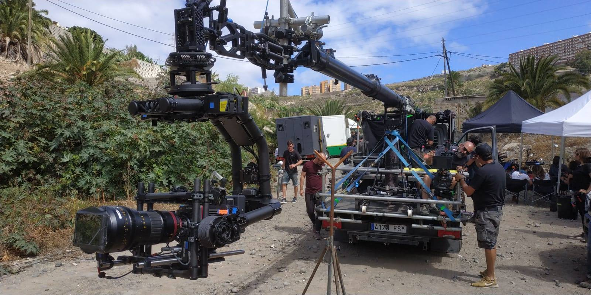

La publicidad de automoción es uno de los trabajos más exigentes para el departamento de grip. El coche es el protagonista, se mueve rápido y cada reflejo cuenta. Las carreteras de Canarias, entre volcanes, costa y montaña, son un escenario habitual para estos rodajes. Así se plantea el equipo de grip para un anuncio de coches.
Los planos que no faltan en un spot de coches
Casi todos los anuncios de automoción combinan estos tipos de plano. Pensar en ellos desde la preproducción es la mejor forma de definir el material:
- Seguimiento en movimiento (paralelo, frontal o trasero).
- Planos de grúa que cambian de altura mientras el coche avanza.
- Planos de interior: conductor, salpicadero, manos al volante.
- Detalles: llantas, faros, carrocería.
- Planos estáticos o de producto con el coche parado.
1. Seguimientos: camera car con grúa
Para los planos dinámicos, la herramienta de referencia es el camera car con grúa y cabeza estabilizada. El vehículo de cámara circula junto al coche protagonista, mientras la grúa acerca, aleja, sube o baja la cámara y la cabeza estabilizada (Movi XL o Ronin 2) mantiene el encuadre.
Permite pasar de un plano a ras de asfalto a una vista elevada en la misma toma, adelantar al coche o dejarse adelantar. Explicamos sus variantes en camera car en Canarias: qué es y tipos.

2. Interiores y detalles: carmount
Cuando la cámara tiene que ir pegada al coche, se usa un carmount. Con ventosas, brazos y tensores se fija a capó, puertas, laterales o dentro del habitáculo.
El Tilta Hydra Alien PRO suma estabilización al montaje y reduce vibraciones, algo clave en carreteras de montaña. Es ideal para el conductor a través del parabrisas, un detalle de rueda en movimiento o un plano que viaja con la carrocería.
3. Planos de producto: dolly y slider
Con el coche parado, en estudio o en localización, el protagonismo lo recuperan el dolly y el slider. Un travelling lento sobre vías con Panther Classic PLUS, o un desplazamiento corto con el Panther Vario Slider, dan ese movimiento preciso y elegante de los planos de revelación de producto. Si dudas entre modelos, consulta la comparativa de dollies.
4. Personas alrededor del coche: gimbal
Muchos spots incluyen a los ocupantes saliendo del coche o caminando en la localización. Ahí entra la estabilización: Ronin 2 para cámaras pesadas o RS3 Pro con Tilta Ring para configuraciones ligeras.
Resumen: plano y equipo
| Plano | Equipo de grip |
|---|---|
| Seguimiento y grúa en movimiento | Camera car + grúa + Movi XL / Ronin 2 |
| Interior y conductor | Carmount (Tilta Hydra Alien PRO) |
| Detalles de carrocería y rueda | Carmount con ventosas |
| Revelación de producto | Dolly sobre vías o slider |
| Personas y entorno | Gimbal, con Easyrig en tomas largas |
| Punto de vista alto sin grúa | Ladderpod (hasta 5,2 m) |
Seguridad y planificación
- Ensayo del recorrido a baja velocidad antes de rodar.
- Permisos y cortes de tráfico en vía pública, coordinados con las autoridades. Más información en rodar en Canarias: permisos.
- Revisión de montajes de carmount antes de cada toma.
- Comunicación por radio entre conductores, grúa y dirección.
- Protección de la carrocería en coches de preserie o de prensa.
Experiencia en automoción
En K Grip hemos participado en rodajes de automoción y publicidad como los que puedes ver en nuestra sección de trabajos. Si preparas un spot de coches en Tenerife o Gran Canaria, envíanos la escaleta o las referencias y te ayudamos a definir el material.
Preguntas frecuentes
¿Qué equipo de grip se necesita para un anuncio de coches?
Normalmente camera car con grúa y cabeza estabilizada para seguimientos, carmount para interiores y detalles, dolly o slider para planos de producto y gimbal para personas.
¿Qué es un carmount?
Un sistema que fija la cámara a la carrocería o al interior del coche con ventosas, brazos y tensores, a veces con estabilización como el Tilta Hydra Alien PRO.
¿Se pueden rodar anuncios de coches en carreteras de Canarias?
Sí, con los permisos del titular de la vía y, cuando corresponda, regulación o corte de tráfico.